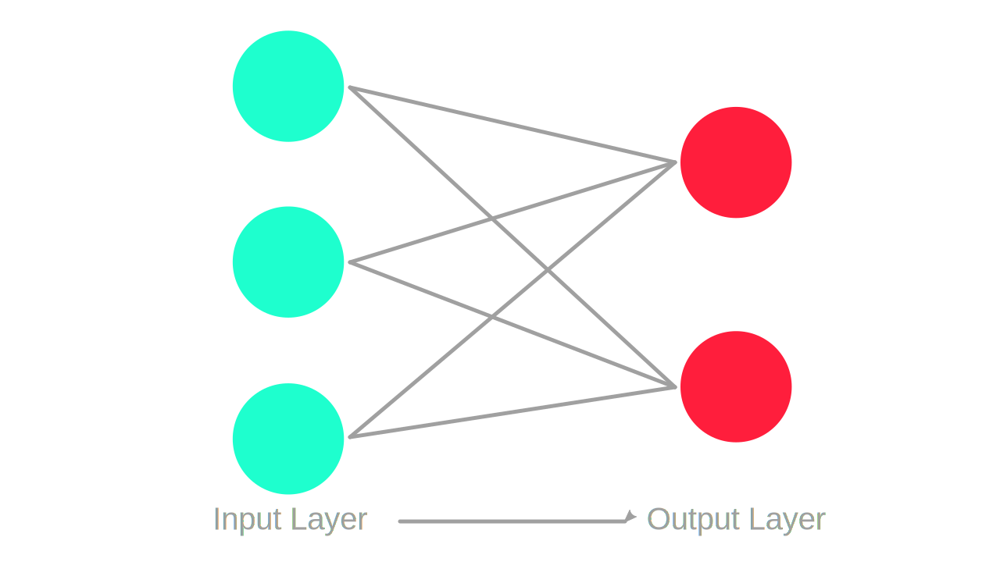
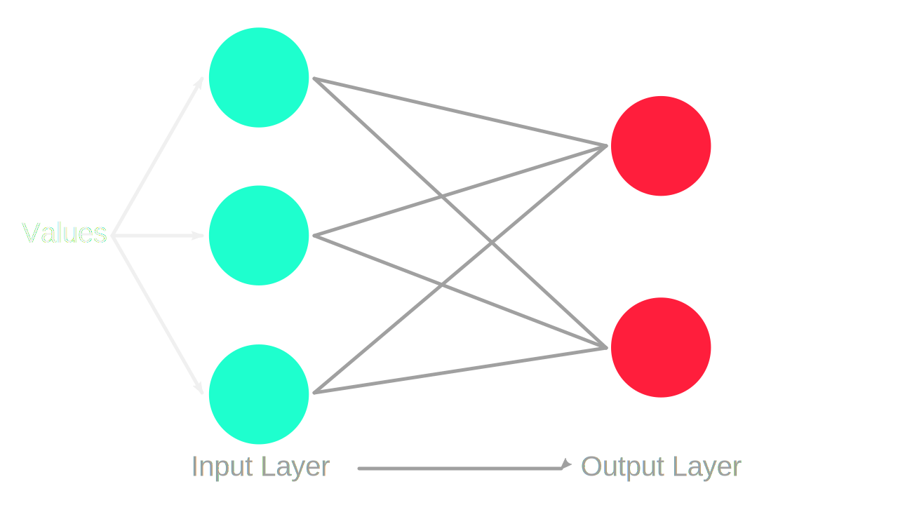
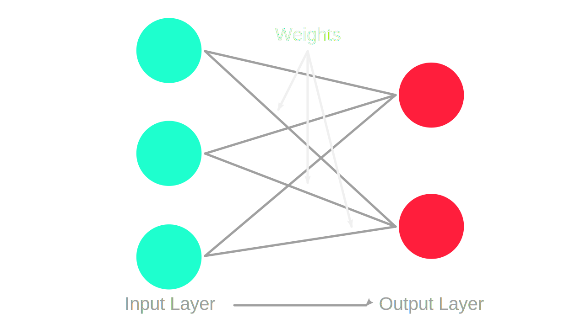
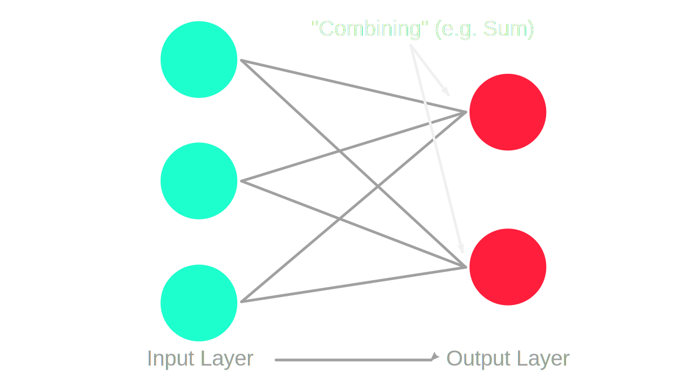
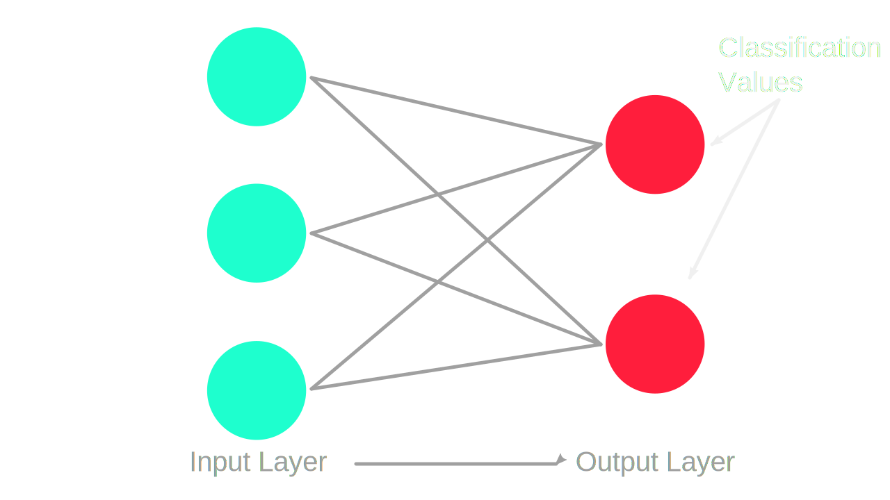
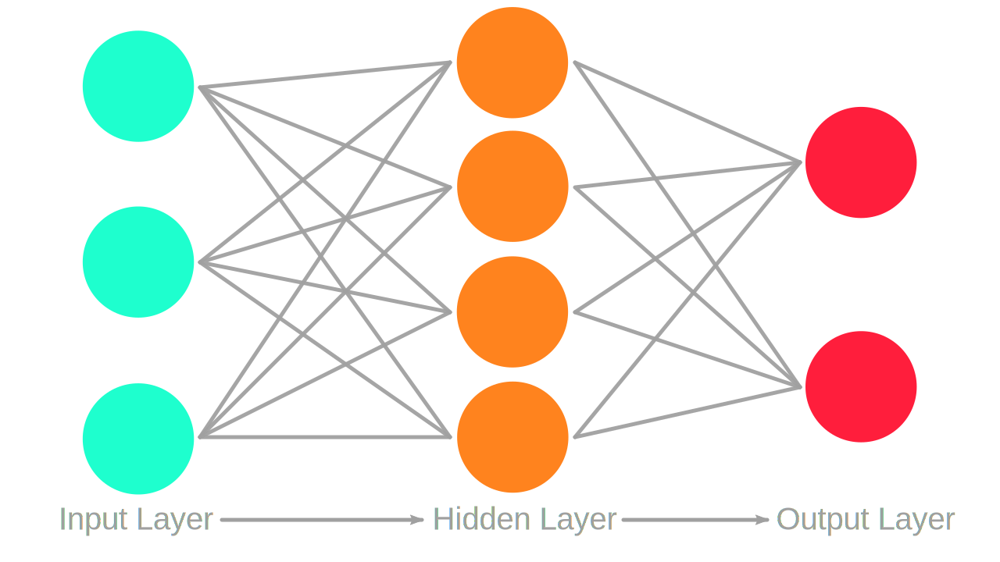
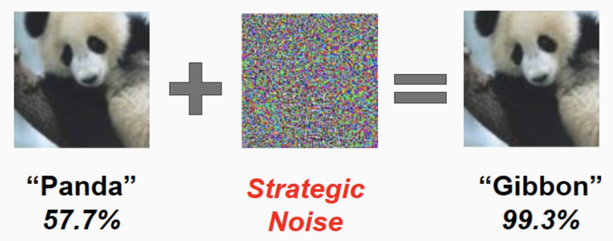
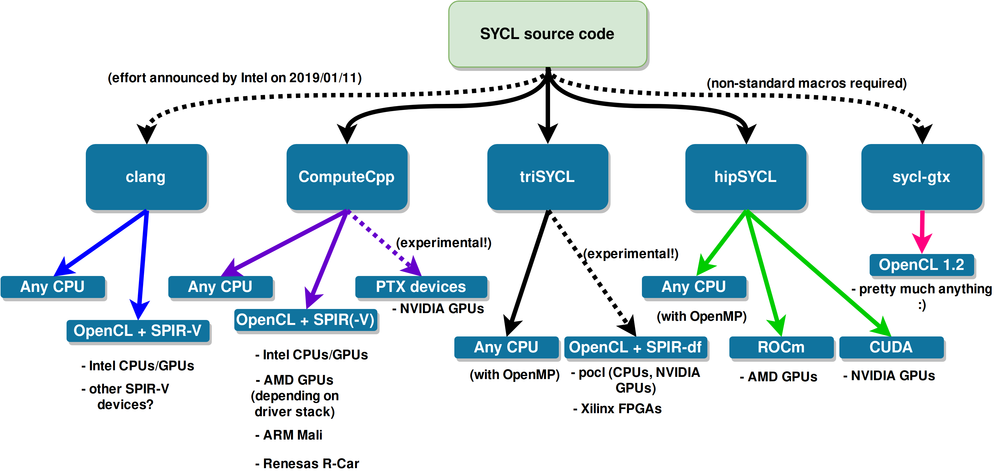

Whats new in
machine learning
world
Introduction
- Why this talk?
- wörk wörk wörk wörk 🎵
- topic interests me
- the talk is broad, not deep
Explanations
Neurons
Neurons
Neurons
Neurons
Neurons
Deep Learning
Propagation
backward
forward
and other
What could go wrong?
wrong patterns
does not differentiate enough
Labradoodle or Chickenwing?
src: Twitter @drjuliashawgibbon vs panda?
 src: towardsdatascience.comGPGPU
- General Purpose Computation on Graphics Processing Unit
- Speed-Up for neural networks
- often C-Libs
- often Python (sometimes Java) to C Wrapper used
Power
| Name | Type | HW |
|---|---|---|
| OpenMP | PRAGMAs | CPU, Accelerators |
| OpenACC | PRAGMAs | Accelerators |
| Cuda | Compiler | CUDA |
| ROC | Compiler | ROCm (AMD-Accelerators) |
| SyCL | Compiler | OpenCL |
OpenMP
- Open Multi-Processing
- more threads/parallelism
- maingoal was CPUs, GPUs work too
OpenMP Example
INSERT CODEOpenACC
- Open Accelerators
- more GPU-oriented
OpenACC Example
INSERT CODECUDA
- Compute Unified Device Architecture
- monopoly position
- NVIDIA only officially 😉
Cuda Example
INSERT CODEROC
- Radeon Open Compute
- "CUDA in Open"
ROC
 src: ROCm Documentation
src: ROCm Documentation
ROC Example
INSERT CODESyCL
- Open Multi-Processing
- extension to OpenCL (Open Computing Language)
- based on C++
- enabling ISO C++17 Parallel STL programs to be accelerated on OpenCL devices src
SyCL
 src: GITHUB hipSYCLSyCL Example
INSERT CODECUDA & NVIDIA
Compiler
- NVCC (NVidia Cuda Compiler)
- Clang
Code NVCC
INSERT CODEDifference CLANG
INSERT CODEEXECUTABLES/PTX

Architecture
- Pascal (GTX 10XX) (SM 6.0 - 6.2)
- Turing (RTX 20XX & GTX 16XX) (SM 7.5)
Industry hits Vendor - "Sum"

Industry hits Vendor - "fp16"

Industry hits Vendor - "Tensorcores
LIBS - CUDNN
- NVIDIA CUDA Deep Neural Network Library
- less RAM
- faster
- "manually optimized"
LIBS - CUBLAS
- NVIDIA CUDA implementation of the standard basic linear algebra subroutines
Embedded hits GPGPU
- more heap, less stack
- but similar environment...
- specialised industry compilers
- custom vendorbased libraries
- manually optimized code
- closed source libraries
- login on vendorwebpage for (free) tools/code...
- C-APIs 😭
- mallocs..... in "C++-Code"....
- people feel smart for complex solutions [pragmas...]
GPGPU and Neural Networks
- different domains!
- concepts are different
- specialised industry compilers
Paul Targosz
- twitter.com/Sickeroni
- github.com/Sickeroni
- linkedin.com/in/paul-targosz
- xing.com/profile/Paul_Targosz
- paultargosz86@gmail.com